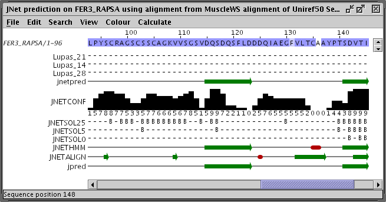

JNet Secondary Structure Prediction
Secondary structure prediction methods attempts to infer the
likely secondary structure for a protein based on its amino acid
composition and similarity to sequences with known secondary structure.
The JNet method uses several different neural networks and decides on
the most likely prediction via a jury network.
-
Cole C., Barber J.D. and Barton G.J. (2008) The Jpred 3 secondary structure prediction server
Nucleic Acids Research 36 W197-W201
-
Cuff J. A and Barton G.J (1999) Application of enhanced
multiple sequence alignment profiles to improve protein secondary
structure prediction Proteins 40 502-511
The function available from the
Web Service→Secondary Structure
Prediction→JNet Secondary Structure Prediction
menu does two different kinds of prediction, dependent upon the
currently selected region:
- If nothing is selected, and the displayed sequences appear to
be aligned, then a JNet prediction will be run for the first sequence
in the alignment, using the current alignment. Otherwise the first
sequence will be submitted for prediction.
- If just one sequence (or a region on one sequence) has been
selected, it will be submitted to the automatic JNet prediction server
for homolog detection and prediction.
- If a set of sequences are selected, and they appear to be
aligned, then the alignment will be used for a Jnet prediction on the first
sequence selected in the set (that is, the one nearest the top of the
alignment window).
Note: JNet secondary structure prediction is a
'non-column-separable' service - predictions are based on the sequence
profile of contiguous stretches of amino-acid sequence. A prediction
will only be made on the visible parts of a sequence (see hiding columns) as if it were
a contiguous polypeptide chain. Prediction accuracy at the hidden column
boundaries may therefore be less than indicated by JNet's own
reliability score (see below).
The result of a JNet prediction for a sequence is a new annotated
alignment window:

The sequence for which the prediction was made is the first one
in the alignment. If a sequence based prediction was made then the
remaining sequences in the alignment are the aligned parts of homologs
which were used to construct a sequence profile for the prediction. If
the prediction was made using a multiple alignment, then the original
multiple alignment will be returned, annotated with the prediction.
The annotation bars below the alignment are as follows:
- Lupas_21, Lupas_14, Lupas_28
Coiled-coil predictions for the sequence. These are binary
predictions for each location.
- JNETSOL25,JNETSOL5,JNETSOL0
Solvent accessibility predictions - binary predictions of 25%,
5% or 0% solvent accessibility.
- JNetPRED
The consensus prediction - helices are marked as red tubes,
and sheets as dark green arrows.
- JNetCONF
The confidence estimate for the prediction. High values mean
high confidence. prediction - helices are marked as red tubes, and
sheets as dark green arrows.
- JNetALIGN
Alignment based prediction - helices are marked as red tubes,
and sheets as dark green arrows.
- JNetHMM
HMM profile based prediction - helices are marked as red
tubes, and sheets as dark green arrows.
- jpred
Jpred prediction - helices are marked as red tubes, and sheets
as dark green arrows.
- JNETPSSM
PSSM based prediction - helices are marked as red tubes, and
sheets as dark green arrows.
- JNETFREQ
Amino Acid frequency based prediction - helices are marked as
red tubes, and sheets as dark green arrows.
- JNETJURY
A '*' in this annotation indicates that the JNETJURY was
invoked to rationalise significantly different primary predictions.